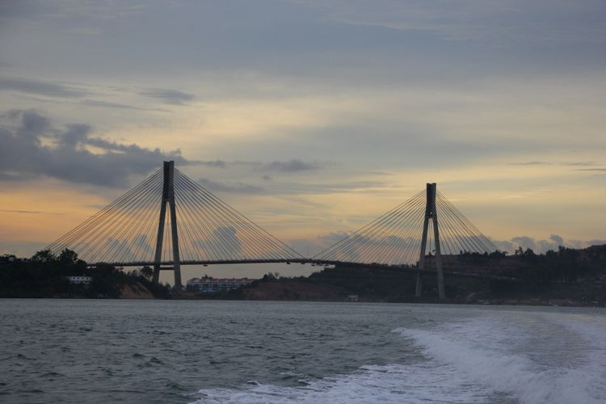

Sejarah

Asal usul nama [7] Kepulauan Riau berasal dari nama Riau. Riau diduga berasal kata "riuh" yang berarti ramai. Hal ini dikarenakan daerah Kepulauan Riau dahulunya merupakan pusat perdagangan dan keramaian. Lalu nama ini berkembang dengan digunakannya nama Riau pada nama Kesultanan Lingga. Pada masa kolonial, kata Riau dituliskan "Riouw", sesuai dengan ejaan bahasa Belanda.
Setelah proklamasi kemerdekaan, wilayah Riau (Kepulauan Riau saat ini) disatukan dengan wilayah Kesultanan Siak di daratan Sumatra. Dahulunya, hal ini dilakukan karena gerakan Ganyang Malaysia sehingga mempermudah hubungan dari wilayah kepulauan ke daratan Sumatra.
Geografis

Secara geografis provinsi Kepulauan Riau berbatasan dengan negara tetangga, yaitu Singapura, Malaysia, dan Vietnam yang memiliki luas wilayah 251.810,71 km² dengan 96 persennya adalah perairan dengan 1.350 pulau besar, dan kecil telah menunjukkan kemajuan dalam penyelenggaraan kegiatan pemerintahan, pembangunan, dan kemasyarakatan. Ibu kota provinsi Kepulauan Riau berkedudukan di Tanjungpinang. Provinsi ini terletak pada jalur lalu lintas transportasi laut, dan udara yang strategis, dan terpadat pada tingkat internasional serta pada bibir pasar dunia yang memiliki peluang pasar. Titik tertinggi di Kepulauan Riau adalah Gunung Daik (1.165 mdpl) yang terdapat di pulau Lingga.
Wisata
Sejak dibukanya Jalan Tol Cipularang, kota Bandung telah menjadi tujuan utama dalam menikmati liburan akhir pekan terutama dari masyarakat yang berasal dari Jakarta sekitarnya. Selain menjadi kota wisata belanja,
kota Bandung juga dikenal dengan sejumlah besar bangunan lama berarsitektur peninggalan Belanda.
Pulau Bawah Anambas

Pulau ini memang digarap menjadi resor yang ramah lingkungan dan berbasis konservasi. Kamu bisa menginap di salah satu bungalownya. Bungalow itu terdiri dari Tent Villa dan Water Villa. Kamu juga bisa menikmati ragam fasilitas menarik seperti infinity pool, bar, perpustakaan, hingga spa.
Jembatan Barelang

Jembatan ini merupakan ikon Kota Batam. Jika dilihat sekilas dari kejauhan, maka kamu akan mengira bahwa jembatan ini mirip Golden Gate di San Fransisco, AS.